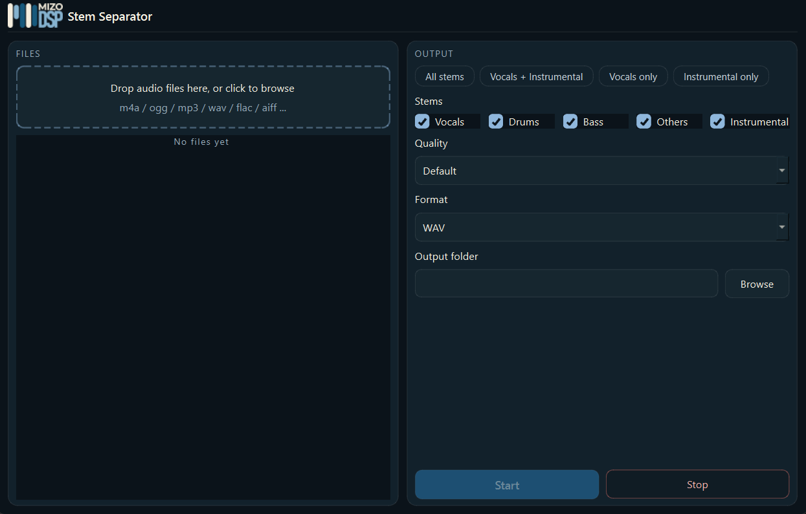

State-of-the-art AI model
Runs 100% offline
Windows 10/11
Free

Stem Separator
MizoDSP · AI Stem Separation
Turn any song into six clean stems — vocals, drums, bass, guitars, pianos and everything else — with a state-of-the-art AI separation model that runs entirely on your own computer.
- State-of-the-art AI model: a fine-tuned hybrid transformer model that pulls clean, natural-sounding stems out of any mix.
- 100% offline & private: separation runs on your own CPU. No uploads, no cloud queue, no account.
- Six stems or the instrumental: vocals, drums, bass, guitars, pianos and other — or an instant karaoke-ready instrumental mix.
- Drag, drop, done: batch queue, quality presets and WAV, FLAC, MP3, M4A or OGG output.
Hear the model
Audition the stems yourself.
Press play, then mute or solo a track to hear exactly what the AI model pulled out. The preview loops, so you can take your time.
Six stems · 2.9 MB
6 Stems
100% Offline
WAV · FLAC · MP3 · M4A · OGG
Windows 10/11
CPU-Only
Free
Get Stem Separator
AI stem separation, on your own machine.
Download the free Windows installer and separate your first song in minutes. The stem preview above was made with the same model that ships in the app.